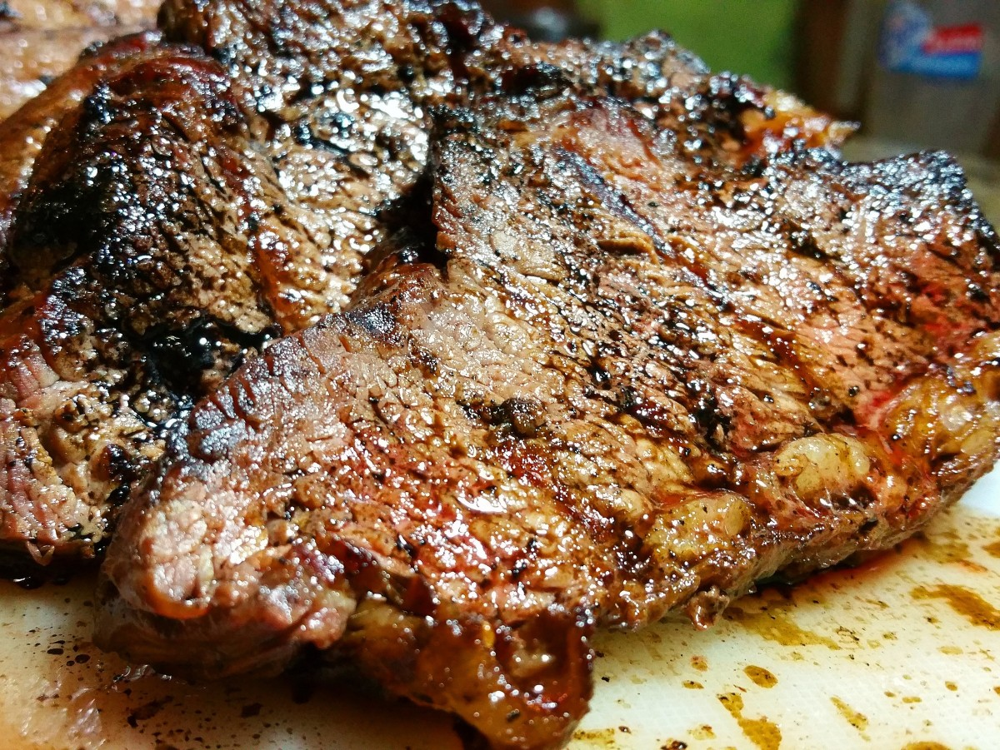

Steak

Description
Steak is, in my opinion, perhaps one of the most satisfying things you can eat. I love it
with eggs for breakfast, on a sald for lunch, or with veggies for dinner. There's lots of
ways to prepare a steak, and a lot of cuts to chose from, but my favorite cut is probably
a ribeye and my favorite way to prepare it is undoubtedly on the grill. Done right, there's
nothing that compares.
Ingredients
- 1 12-16 oz. ribeye steak (can sub. t-bone, new york strip, sirloin, or filet)
- 1 tsp. fine ground salt
- 1 tsp. black pepper
Steps
- If frozen, defrost your steak in the fridge overnight (if fresh, you can skip this step).
- Set your steak out, covered, on the countertop while you get your grill set up.
Letting your steak get closer to room temp. will make the cooking more even,
BUT be careful not to leave your steak uncovered or out too long.
- Bring your grill to 400 degrees.
- While your grill heats up, evenly cover both sides of your steak with salt and pepper
- Once your grill is to temp., drop your steak right on those grates and enjoy that sizzle!
- Grill for 2 min. on one side, then flip and grill for another 2 min. on the other side
- As soon as your timer goes off, take that steak right off the grill and transefer it straight to your plate.
You'll have a beatifully seared outside, and a perfectly-cooked medium-rare inside. Declicious!